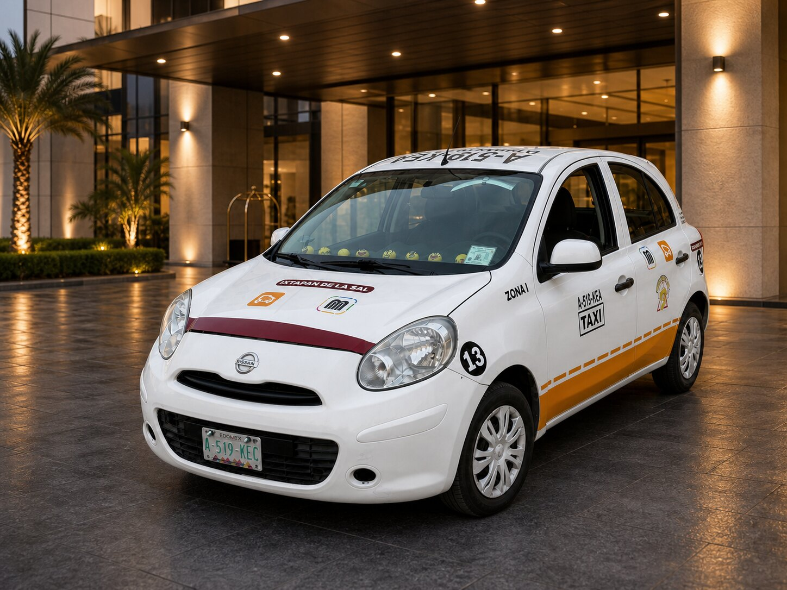
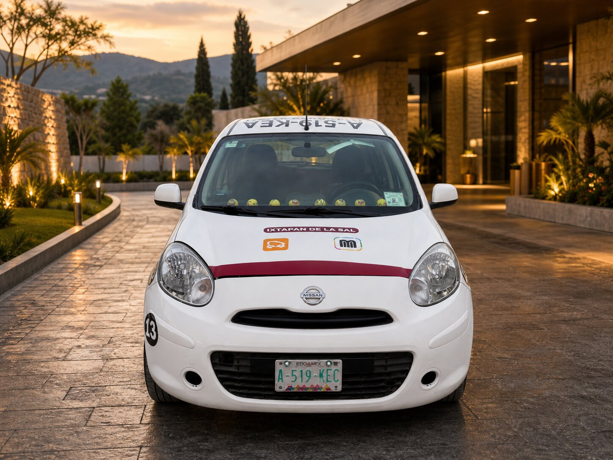
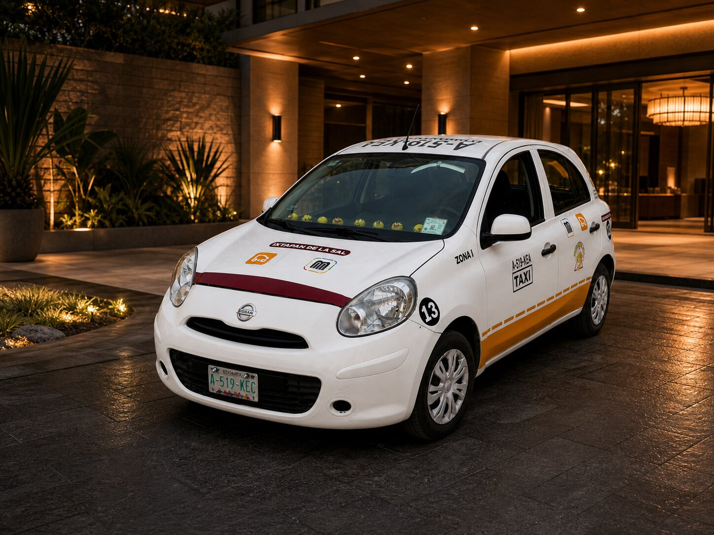
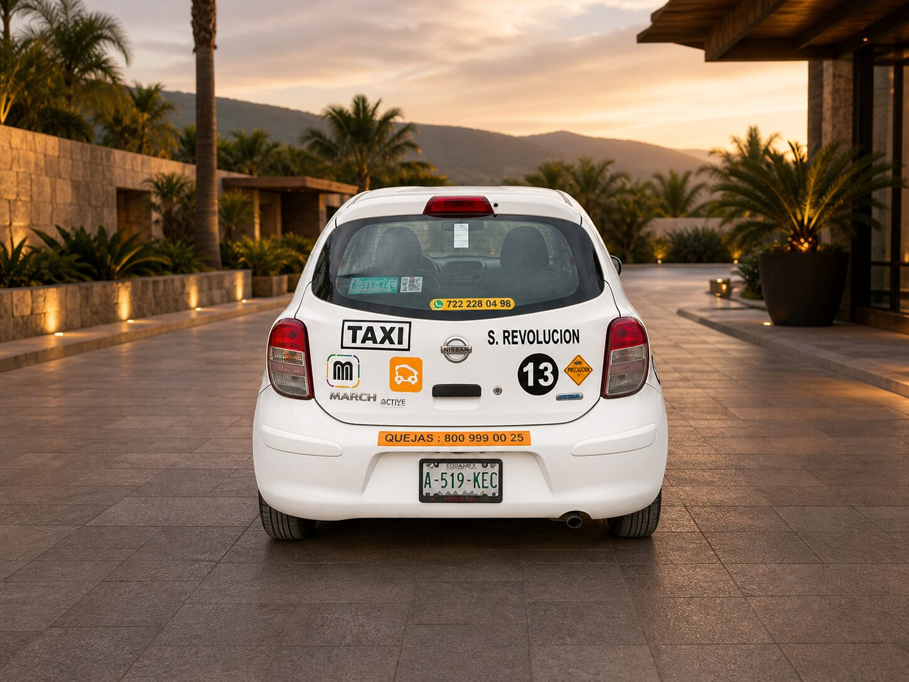

Viajes locales
Traslados dentro de Ixtapan de la Sal para compras, consultas, trabajo o visitas.
Taxi local y viajes regionales
Viajes locales y regionales en Ixtapan de la Sal, Tonatico y municipios cercanos.
Cotiza por WhatsApp antes de iniciar tu viaje.
Unidad
Unidad identificada, limpia y presentada con una imagen más profesional para que el servicio se perciba como debe: directo, confiable y cuidado.




Servicios
Servicio directo de taxi para viajes locales y salidas regionales. Las tarifas se confirman antes de iniciar el recorrido.
Traslados dentro de Ixtapan de la Sal para compras, consultas, trabajo o visitas.
Viajes frecuentes entre Tonatico e Ixtapan con tarifa base conocida.
Salidas a Tenancingo, Coatepec Harinas, El Mogote y Pilcaya bajo acuerdo previo.
Atención amable para familias, personas mayores y pasajeros que buscan confianza.
Confianza
Tarifas
Consulta algunas tarifas de referencia. Para conocer el precio exacto de tu viaje, confirma tu salida y destino por llamada o WhatsApp.
Los precios son orientativos y pueden variar según el punto exacto de salida, destino, horario, tiempo de espera y condiciones del viaje. La tarifa final se confirma por teléfono o WhatsApp antes de iniciar el servicio.
Clientes
Comentarios de pasajeros que buscan un taxi puntual, trato amable y precio claro antes de salir.
Siempre confirma antes de salir y avisa cuando ya esta cerca. El servicio es directo y confiable.
Lo contacto para viajes entre Tonatico e Ixtapan. Me gusta que el precio queda claro antes del recorrido.
Buen trato para traslados familiares y viajes programados. La unidad va limpia y el trato es amable.